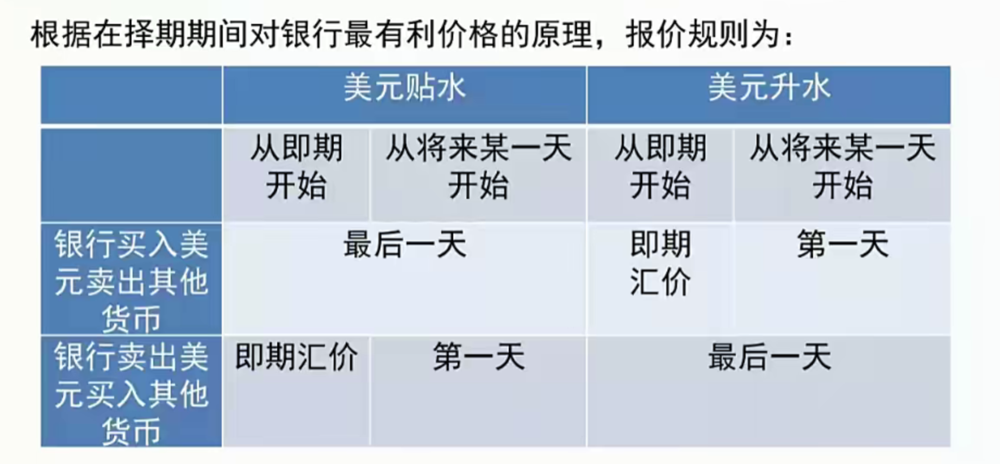
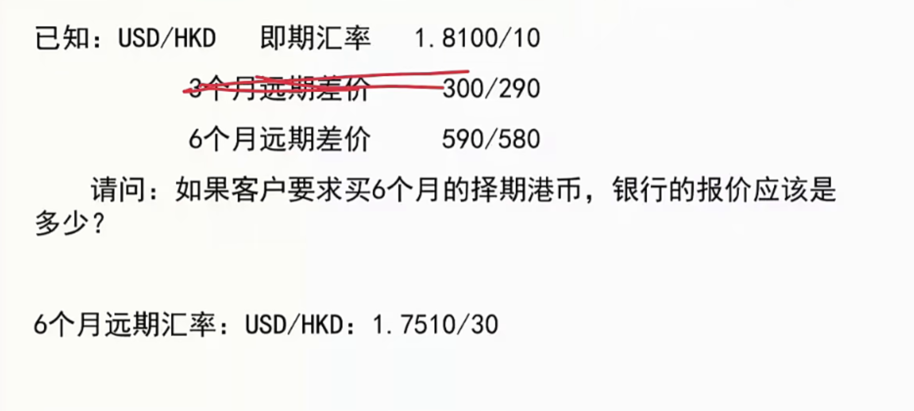

[toc]
第一节 外汇、外汇及其构成 💸
一、定义🦖
- 外汇的含义
1
2
3
4
5
6
7
8
|
把一国货币兑换成另一国货币的国际汇兑行为和过程。
以外币表示的可用于对外支付的金融资产（以外币标示、可用于国际结算的支付手段）。
(1) '自由兑换性'，即这种外币能自由地兑换成本币
(2) '普遍接受性'，即这种外币在国际经济往来中被各国普遍接受和使用
(3) '可偿性'，即这种外币资产是可以保证得到偿付的。
|
- 我国外汇的构成
1
2
3
4
5
6
| 下列以外币表示的可以用作国际清偿的支付手段和资产
(1) 外国货币，包括纸币、铸币；
(2) 外币支付凭证，包括票据、银行存款凭证、邮政储蓄凭证等；
(3) 外币有价证券，包括政府债券、公司债券、股票等
（4) 特别提款权、欧洲货币单位；
(5) 其他外汇资产。
|
二、我国的外汇管理和人民币可兑换问题
- 第八条款国
1
2
3
| 1996年底，我国实现了人民币经常项目可兑换。至于资本项目的可兑，总体思路是明确的:
从我国的实际出发，借鉴国际经验，以放松资本项目交易限制、引入和培育资本市场工具为主线，在风险可控的前提下，依照循序渐进、统筹规划、先易后难、留有余地的原则，分阶段、有选择地逐步推出资本目开放措施。
'第八条款国'：实现了经常账户下货币自由兑换的国家
|
第二节 汇率与汇率制度🐯
一、汇率的概念和标价方法
1
2
3
4
5
6
7
|
是指两种不同货币之间的折算比价，即以一国货币表示的另一国货币的价格。
用一单位的外国货币作为标准，折算为一定数额的本国货币来表示的汇率
以一单位本国货币为标准，折算为一定数额的外国货币来表示的汇率。
目前，世界上大多数国家（包括我国）都采用直接标价法表示汇率，采用间接标价法的国家主要有美国和英国（及英联邦国家）。
|
二、汇率的分类
- 从银行买卖外汇的角度，划分为买入汇率、卖出汇率和中间汇率
1
2
3
4
5
6
7
8
|
银行用本币从客户手中买入外汇时，银行报出的汇率称为买入汇率。
银行卖出外汇換取客户手中的本币时，银行报出的汇率称为卖出汇率。
将买入汇率和卖出汇率取算数平均，得到中间汇率。
中国于2005年7月和2010年6月两次启动人民币汇率形成机制改革，两次汇改之间人民币对美元汇率也从 8.2765 调整到 6.8275, 则人民币对美元（）。【对外经济贸易大学 2011 金融硕士】
A。升值 17.5% B。贬值 17.5% C。升值 21.2% D。贬值 21.2%
|
- 按制定汇率的方法不同，划分为基准汇率和套算汇率‼️
1
2
| 基准汇率是本币与对外经济交往中最常用的主要货币之间的汇率；
套算汇率又称交叉汇率，是根据本国基准汇率套算出本币对其他国家货币的汇率或套算出其他外币之间的汇率。
|

- 按外汇交割日不同，划分为即期汇率和远期汇率‼️
1
2
3
4
| '即期汇率'是买卖双方成交后，在两个营业日内办理交割时所使用的汇率；
'远期汇率'是买卖双方事先约定的，据以在未来一定时期（或时点）进行外汇交割时所使用的汇率
远期价指远期汇率与即期汇率的汇价之差，分为升水（本币数额增大）、贴水（本币数额减少）和平价（远期汇率和即期汇率相同）
远期交易的风险更大，远期买卖差价高于即期买卖差价的部分是对银行承担风险的一种补偿。
|
- 按照汇率决定方式，划分为固定汇率和浮动汇率
1
2
3
4
5
6
7
8
9
10
11
12
13
14
15
16
17
18
19
20
21
22
| '固定汇率制'：一国货币同他国货币的汇率基本固定，其波动限于在一定的幅度之内，由官方干预来保持汇率的稳定。
'浮动汇率制'：一国不规定本国货币与他国货币的官方汇率，听任汇率由外汇市场的供求关系自发地決定。
我国：有管理的浮动。不是非黑即白
一国货币当局无法同时实现维持固定汇率制，保证国际资本自由流动和货币政策独立性三个目标。
答：固定汇率制度指一国货币的汇率基本固定，同时又将汇率的波动限制在一个规定的范内的汇率制度。浮动汇率制度是指汇率水平完全由外汇市场的供求决定的、政府不加任何干预的汇率制度。
(1) 固定汇率制的优缺点
①固定汇率制的优点是有利于世界经济的发展。
由于在固定汇制下两国货币比价基本固定，或汇率的波动范围被制在一定幅度之内，这就便于经营国际贸易、国际信贷与国际投资的经济主体进行成本和利润的核算，也使这些国际经济交易的经济主体面临的汇率波动风险损失较小，从而有利于国际经济交易的进与开展，从而有利于世界经济的发展。
②定汇率制的缺点：
第一，汇率基本上不能发挥调节国际收支的经济杠杆作用。汇率变动有着影响国际收支的经济作用，而汇率可充作调节国际收支的经济杠杄。固定汇率制下，汇率就基本不能发挥其调节国际收文的经济杠杄作用。
第二，固定汇率制有牺牲内部平衡之虞。由于汇率基本不能发调节国际收支的经济杆作用，当一国国际收支失衡时，就需采取紧缩性或扩张性财政贷币政策，这会使国内经济增长受到抑制和失业扩大化，或者使通货膨胀与物价上洣严重化。另外，维持汇率波动官定上下限所采取的干预外汇市场的措施，也会有同样的后果：软货币（或称“弱币”，即汇率有下降趋势的货币）发行国货币当局进行干预，一方面会使其外汇储备流失，另一方面又会形成紧缩性的经济影响；硬货币（或称“强币”，即汇率有上升趋势的货币）发行国货币当局进行市场干预，会形成扩张性经济影响，使该国通货膨胀与物价上涨加快。
第三，易引起国际汇率制度的动荡与混乱。当一国际收支恶化，进行市场干预仍不能平抑汇价时，该国最后有可能采取法定贬值的措施。这会引起同该国有密切经济关系的国家也采取法定贬的措施，从而导致外汇市场和整个国际汇率制度的动荡与混乱。
(2) 浮动汇率制度的优缺点
①浮动汇率制度的主要优点：
第一，汇率发挥其调节国际收支的经杠杆作用。国的国际收支失衡，可以经由汇率的上下浮动而加以消除。
第二，只要国际收支失衡不是特别严重，就没有必要调整财政政策和货币政策，从而不会以牺牲内部平衡来换取外部平衡的实现。
第三，少了对储备的需要，并使羞国免了外汇储备的流失。这是因为，在浮动率制度下，各国货币当局没有干预外汇市场和稳定汇率的义务。这一方面使逆差国避免了外汇储备的流失，另方面又使各国不必保持太多的外储备，从而能把节省的外汇资金用于本国经济的发展。
②浮动汇率制度的主要缺点
第一，汇率频繁与剧烈地波动，使进行国际贸易、国际信贷与国际投资等国际经济交易的经济主体难以核算成本和利润，并使他们面临较大的汇率波动所造成的外汇风险损失，从而对世界经济的发展产生不利影响。
第二，为外汇投机提供了土壤和条件，助长了外汇投机活动，这必然会加周国际金融市场的动荡与混乱。
|
三、套汇交易
套汇交易是指套汇者利用不同地点、不同货币在汇率上的差异进行贱买贵卖，从中套取差价利润的一种外汇交易。
- 直接套汇和间接套汇
- 抛补套利和无抛补套利
1
2
3
4
5
6
7
8
|
假定在同一时间里，英镑兑美元汇率在纽约市场上为 1 英镑= 2.2010/2.2015美元,在伦敦市场上为1英镑=2.2020/2.2025美元。请问在这种市场行情下（不考虑套汇成本）如何套汇？
100 万英镑的套汇利润是多少？
答案：
客户可以在伦敦卖出英镑买入美元并且在美国卖出美元买入英镑，100 万英镑交易额的套汇本利和为
2.2020÷2.201510000=1000227（英镑）
所以，套汇利润为：1000227-100000=227（英镑）
|
四、掉期外汇交易
掉期交易，是指同时买进和卖出相同金额的某种外汇但买与卖的交割期限不同的一种外汇交易。常见类型：一笔掉期交易是由一笔即期和一笔远期交易组合而成的。
- 用于套期保值的操作一避免外汇风险
- 扎平交易中的资金缺口
1
2
3
4
5
6
7
8
9
10
11
12
13
14
15
16
17
18
|
某港商 1 个月后有一笔 100 万欧元的应付账款，3 个月后有一笔 100 万欧元的应收账款。在掉期市场上，1 个月期欧元汇率 EUR/HKD=7.7800/10,3个月期欧元汇率EUR/HKD=7.7820/35。
策略:
该港商可以进行 1 个月对 3 个月的远期对远期掉期交易，买入 1 个月期 100 万欧元，卖出 3 个月期 100 万欧元，收入为 1000 港元。
银行分别承做如下四笔外汇交易：
1)卖出即期美元500 万
2)买入2 个月远期美元200万
3)买入即期美元 400 万
4)卖出 2 个月远期美元 100 万
请问：银行如何操作才能平衡资金缺口，规避风险？
策略：银行即期是美元空头 100 万，2 个月远期是美元多头 100 万，掉期交易：即期买入 100 万美元，卖出 2 个月远期 100 万美元.
为避免美元汇率变动的风险，A 公司在外汇市场上买进即期美元外汇的同时，卖出等量的远期美元外汇，这叫做（）。【中山大学 2015 金融硕士】
A。套汇
B。套利
C。掉期✅
D。投机
|
五、择期
择期交易是指客户可以在约定的将来某一段时间内的任何一个工作日，按约定的汇率进行交割的外汇买卖业务，它是一种可选择交割日的远期外汇买卖。


六、汇率制度选择
1
2
| 汇率制度是指一国货币当局对本国汇率水平的确定、汇率变动方式等问题所作的一系列安排或规定，最基本的问题是采取固定汇率制还是采取浮动汇率制。
小结：目前，固定汇率制度和浮动汇率制度孰优孰劣尚无定论，争论仍然在继续。要在浮动汇率制和固定汇率制之间找到一个平衡点，一个比较好的选择可能就是有管理的浮动汇率制度。
|
第三节 币值、利率与汇率🤑
一、货币的对內价值与对外价值
货币的对内价值：货币的购买力，它相当于物价的倒数。货币的对外价值：一国货币的币值还可以用另一国的货币来表
二、名义汇率与实际汇率
名义汇率是两国通货的相对价格。实际汇率是两国产品的相对价格，表示按什么比率用一国的产品交换另一国的产品。
- 间接标价法关系：
- ϵ=e×(P∗P)
- ede=ϵdϵ+PdP∗−PdP
1
2
3
4
|
(1) 如果实际汇率高，则名义汇率也高，两者正相关。
(2) 如果一国相对于另一国通货膨胀率高，该国货币有贬值压力；如果一国相对于另一国通货膨胀率低，该国货币有升值压力
(3) 一国的货币政策会影响到该国的名义汇率。高货币长引起高通货膨胀，高通货膨胀又引起货币贬值。
|
第四节 汇率决定理论🎼
一、汇率决定的基础
汇率决定的基础，从本质上讲取决于不同货币所包含的价值量，但在不同的货币制度下，其具体表现不同。
二、影响汇率变化的因素
1
| 1. 财政经济状况 2. 国际收支状况 3. 利率政策与利率水平 4. 通货膨胀因素 5. 财政、货币政策 6. 市场预期 7. 政府的市场干预 8. 重大的国际事件
|
三、汇率决定理论
1. 购买力平价说(长期)🦒
- 绝对:EA/B=PBTPAT
- 相对:EA/B0EA/B=PBT/PB0PAT/PA0=PBTPAT
1
2
3
4
5
6
7
8
9
10
11
12
13
14
15
16
|
(1) 理论基础
购买力平价的理论基础是货币数量论和一价定律。一价定律是指同一商品在世界各国的价格当用同一货币表示时，应该是一致或相同的。
(2) 基本思想
汇率取决于两国货币购买力的相对关系。
(3) 对购买力平价理论的评价
购买力平价说指出以国内物价对比作为汇率决定的依据，说明货币的对内贬值必然引起货币的对外贬值，
它提示了汇率变动的'长期原因'。
主要的不足之处：
·对短期汇率的变动来说，没有太强的说服力。
·它只考虑了可贸易品的价格，没有把非贸易品价格考虑进去，因而不能准确说明不同国家的实际价格及其比价问题。
绝对购力价是指，在某一时点上，两国货币之间的兑换比率取于两国货币的购买力之比。
把汇率变动的幅度和物价变动的幅度联系起来，这就是相对购买力平价，
简要说明一价定律和购买力平价理论的区别与联系。【复日大学 2018 金融硕士】
|
2. 利率平价说（短期）🩳
- 拋补:1+i=(1+i∗)ef
- 得ef−e=i−i∗
- 非拋补:1+i=(1+i∗)ees
- 得ees−e=i−i∗
1
2
3
4
5
6
7
8
9
10
11
12
13
|
经济含义是：汇率的远期升（贴）水率等于两国利率之差如果本国利率高于外国利率，本币在远期将贬值；如果本国利率低于外国利率，本币在远期将升值。
投资者在进行套利时没有在远期外汇市场上卖出远期外汇
经济含义是：预期的汇率变动率等于两国货币利率之差。
首先，利率平价说从资金流动的角度指出了汇率与利率之间的密切关系，有助于正确认识现实外汇市场上汇率的形成机制
其次，利率平价说不是一个独立的汇率决定理论，不仅利率的差异会影响到汇率的变动，汇率的改变也会通过资金流动影响不同市场上的资金供求关系，进而影响利率。
再次，利率平价说具有特别的实践价值
目前，外汇市场上加拿大元对日元的即期汇率为 1 加元 113 日元，一年期远期汇率为 1 加元=100 日元。加拿大元的年利率为 5%，日元的年利率为 2%。
(1) 请证明是否存在套利空间？
(2) 如果可以套利，并且你可以动用 1000 加元或 113000 日元，那么你将如何套利？套利后的利润是多少（用加元表示）?【浙江工商大学 2012 金融硕士】
|
3. 国际收支理论
- e=f(yd,yf,pd,pf,id,if,e^)
1
2
3
4
5
6
7
8
9
10
11
12
|
国际收支说认为，汇率是由外汇供求決定的，而外汇供求又由国际收支来决定，外汇供求平衡是国际收支均衡的一种表现。
①理论贡献
a。国际收支说具有浓厚的凯恩斯主义色彩，是凯恩斯主义的国际收支理论在浮动汇率制度下的表现形式。它指出了汇率与国际收支的密切关系，有利于全面分析短期内汇率的变动与决定。
b。由于国际收支说将国际收支所引起的外汇供求流量当成了决定短期汇率水平及其变动的主要因素，因此，该理论是个关于汇率决定的流量理论。
c。尽管国际收支说不能称之为完整的汇率定理论，但是它在进行更深入的分析时是可以利用的一种工具。
②理论缺陷
a。国际收支说对各变量如何影响汇率的分析是在其他变 量不变的条件下进行的，而实际这些变量之间存在着复杂的关系，从而它们对汇率的影响是难以简单确定的。
b。基本公式中的汇率预期是难以估计的，导致国际收支说的实际应用价值受影响。
c。国际收支说没有形成完整的理论体系，它只是揭示汇率与其他经济变量存在的联系。
d。国际收支说核心基础是要求国际收支平衡，但实际经济中，经常是处于国际收支不均衡的状态，因而该理论的适用性受到限制。
|